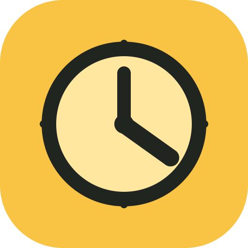

ANALOG KLOKKE
Wie viel Uhr ist es?
Dra viserne, velg en tilfeldig tid eller følg systemklokka. Vis teksten når du vil kontrollere svaret.
Analoguhr
Dra nærmest den viseren du vil flytte.

LernuhrANALOG KLOKKE
Dra viserne, velg en tilfeldig tid eller følg systemklokka. Vis teksten når du vil kontrollere svaret.
Dra nærmest den viseren du vil flytte.